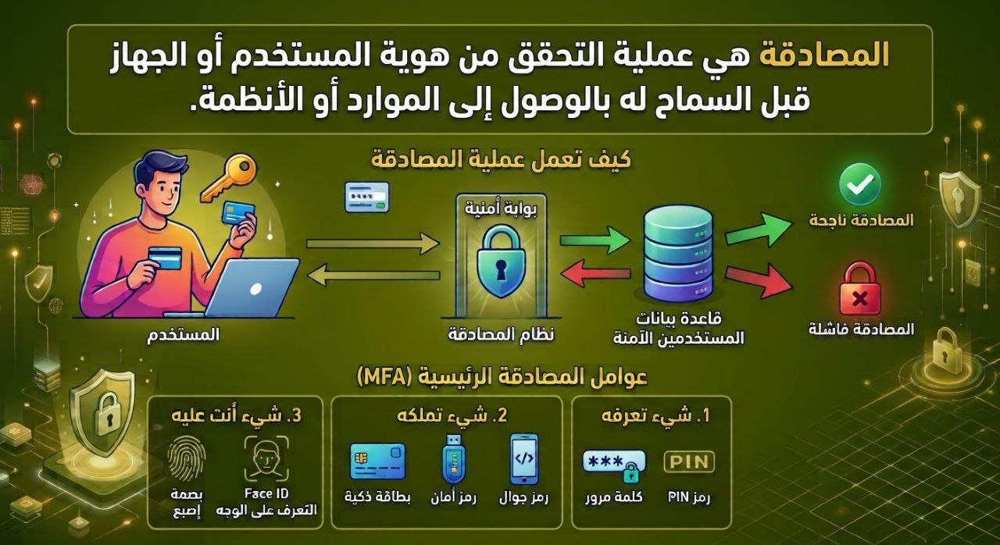
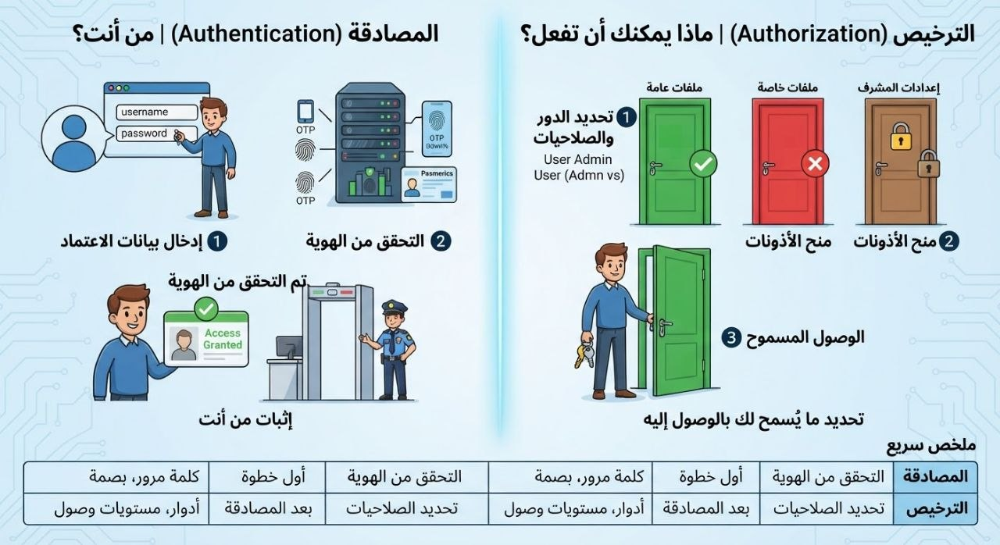
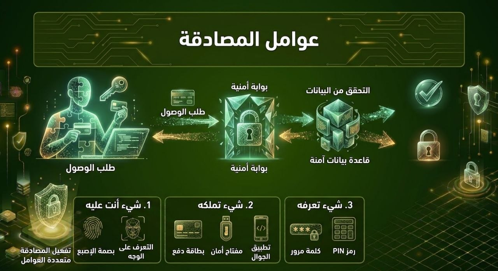
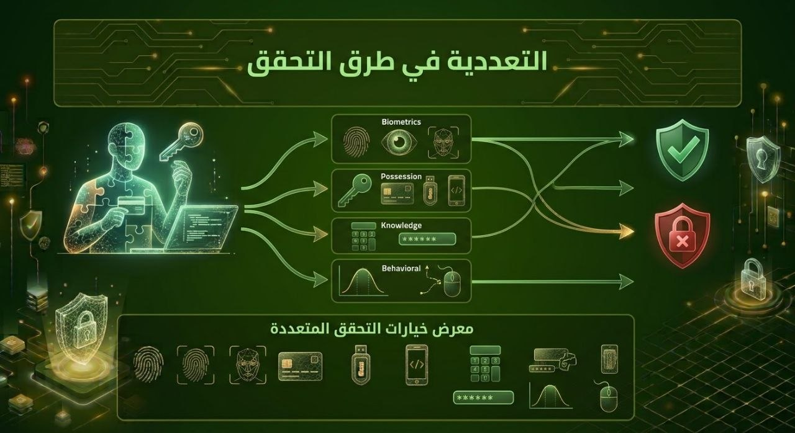
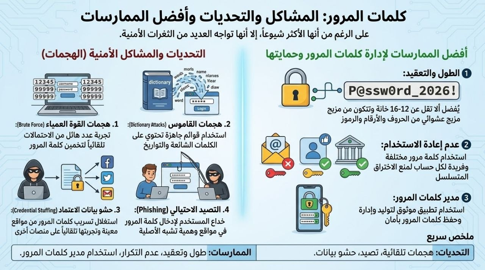
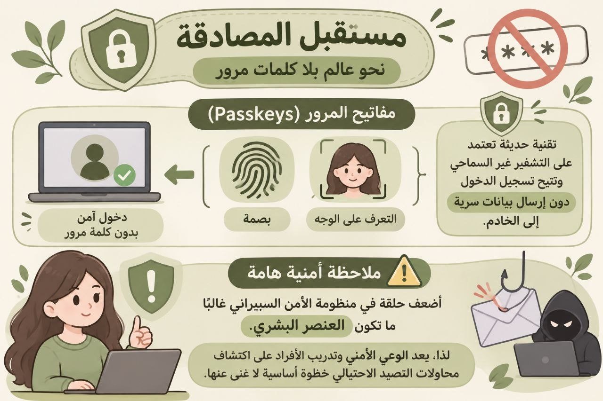

ما هي المصادقة (Authentication)؟
المصادقة هي العملية الأمنية التي يتم من خلالها التحقق من هوية المستخدم أو الجهاز أو النظام قبل السماح له بالوصول إلى الموارد أو البيانات الحساسة.

الفرق بين المصادقة والترخيص (Authorization)
- المصادقة (Authentication): هي إثبات "من أنت؟" (مثل إدخال اسم المستخدم وكلمة المرور).
- الترخيص (Authorization): هو تحديد "ما الذي يحق لك فعله؟" بعد التأكد من هويتك (مثل صلاحيات الوصول إلى ملف معين أو مدير النظام مقابل مستخدم عادي).

عوامل المصادقة (Factors of Authentication)
تعتمد أنظمة المصادقة على ثلاثة عوامل أساسية رئيسية، وكلما زادت العوامل المستخدمة، زادت صعوبة اختراق النظام:
- العوامل المعرفية (Something you know): مثل كلمات المرور (Passwords)، أرقام التعريف الشخصية (PIN)، أو الإجابات على الأسئلة الأمنية.
- العوامل المادية (Something you have): مثل الهواتف الذكية لتلقي رموز التحقق (OTP)، البطاقات الذكية (Smart Cards)، أو مفاتيح الأمان الفيزيائية (مثل مفاتيح YubiKey).
- العوامل الذاتية (Something you are): مثل بصمة الإصبع، التعرف على الوجه، بصمة الصوت، أو مسح شبكية العين.

المصادقة التعددية ومتعددة العوامل (MFA / 2FA)
المصادقة متعددة العوامل (Multi-Factor Authentication - MFA): هي استخدام عاملين أو أكثر من العوامل المذكورة أعلاه للتحقق من الهوية.
لماذا هي ضرورية؟ الاعتماد على كلمة المرور وحدها أصبح أمراً ضعيفاً وغير آمن نظراً لسهولة سرقتها أو تخمينها.
أمثلة على MFA:
- إدخال كلمة المرور (ما تعرفه) + رمز يتم إرساله عبر الرسائل النصية أو تطبيق المصادقة مثل Google Authenticator (ما تملكه).
- كلمة المرور + بصمة الإصبع (ما تعرفه + ما تملكه/أنت عليه).

كلمات المرور (المشاكل والتحديات وأفضل الممارسات)
على الرغم من أنها الوسيلة الأكثر شيوعاً للمصادقة، إلا أن كلمات المرور تواجه العديد من الثغرات الأمنية:
- هجمات القوة العمياء (Brute Force Attacks): تجربة عدد هائل من الاحتمالات تلقائياً حتى يتم تخمين كلمة المرور الصحيحة.
- هجمات القاموس (Dictionary Attacks): استخدام قوائم جاهزة تحتوي على الكلمات الشائعة، التواريخ، والأسماء.
- حشو بيانات الاعتماد (Credential Stuffing): استغلال تسريب كلمات المرور من مواقع معينة وتجربتها تلقائياً على منصات أخرى.
- التصيد الاحتيالي (Phishing): خداع المستخدم لإدخال كلمة المرور الخاصة به في مواقع وهمية تشبه المواقع الأصلية.
أفضل الممارسات لإدارة كلمات المرور وحمايتها:
- الطول والتعقيد: يُفضل أن تكون كلمة المرور طويلة (لا تقل عن 12-16 خانة) وتتكون من مزيج عشوائي من الحروف الكبيرة والصغيرة والأرقام والرموز.
- استخدام مدير كلمات المرور (Password Manager): تطبيقات آمنة ومتخصصة لتوليد وتخزين كلمات مرور معقدة وفريدة لكل موقع.
- تجنب المعلومات الشخصية: الابتعاد نهائياً عن استخدام تواريخ الميلاد، أسماء الأقارب، أو أرقام الهواتف.
- تحديثها عند الشك: تغيير كلمة المرور فوراً إذا كان هناك اشتباه باختراق الحساب أو تسريب البيانات.
- تفعيل التوثيق الثنائي (MFA): كخط دفاع ثانٍ وثابت حتى في حال تسريب كلمة المرور.

مستقبل المصادقة (نحو عالم بلا كلمات مرور - Passwordless)
يتجه قطاع الأمن السيبراني تدريجياً نحو التخلي عن كلمات المرور التقليدية نظراً لعيوبها البشرية، واعتماد تقنيات أكثر أماناً مثل:
- مفاتيح المرور (Passkeys): تقنية حديثة تعتمد على التشفير غير السماحي (Public-Key Cryptography) وتتيح للمستخدم تسجيل الدخول عبر البصمة أو التعرف على الوجه دون الحاجة لتذكر كلمة مرور نهائياً.
ملاحظة أمنية هامة: أضعف حلقة في منظومة الأمن السيبراني غالباً ما تكون العنصر البشري. لذلك، يُعد الوعي الأمني المستمر وتدريب الموظفين والأفراد على اكتشاف محاولات التصيد الاحتيالي خطوة أساسية لا غنى عنها بجانب الأنظمة التقنية.
